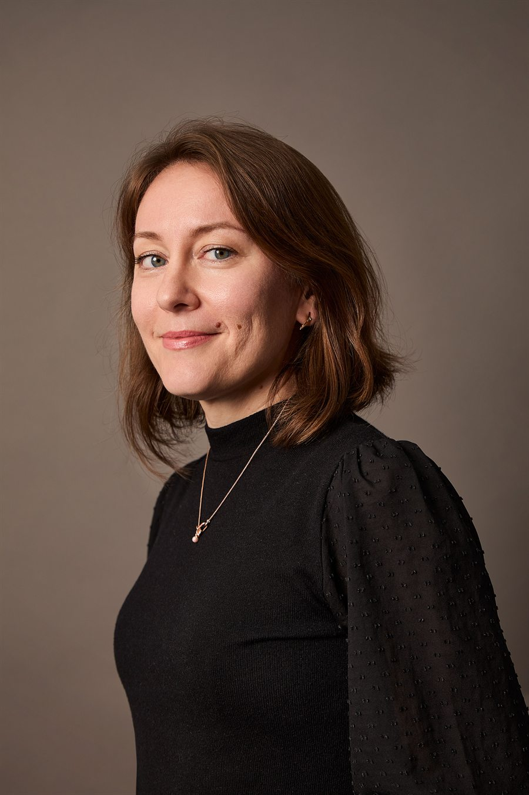

Associate Professor · TU Delft
Olya
Kudina
Olya helps teams and organisations design technologies that reflect human values.
Get in touch
Ethicist at the intersection
of values and technology
Olya Kudina is an ethicist of technology focusing on the dynamic interaction between human values and technologies. Currently, she is an Associate Professor at Delft University of Technology (the Netherlands), where she helps students and organisations integrate ethical reflection and cultural sensitivity as essential counterparts to technology development.
Olya is co-director of the AI DeMoS Lab, which focuses on the relation between AI and democracy and on responsible AI development practices. She is also co-founder and co-editor-in-chief of the diamond open-access Journal of Human-Technology Relations.
- PhD in Philosophy of Technology — University of Twente
- Extraordinary Professor in Philosophy of AI — North-West University, South Africa
- Elected member (2024–2029) — Young Academy of the Dutch Royal Science Academy
- Fluent in English, Spanish, Dutch & Ukrainian
Working with Olya
For talks, media requests and research partnerships on AI, democracy and human values.
ContactResearch
AI & Democracy
Responsible AI development, governance, and democratic values — through the AI DeMoS Lab.
Ethics of NLP & ASR
Voice assistants, conversational agents (Alexa, ChatGPT) — bias, values, and mediation.
Philosophy of Technology
Phenomenology, pragmatism, and empirical methods from STS and psychology.
Governance & Foresight
Data protection, policy, and developing adaptable ethical frameworks for emerging tech.
Supervision
Olya supervises PhD projects at the intersection of technology, society, and ethics.
- The interrelation of synthetic media and trust
- Political subjectivity and social media
- Digital phenotyping in mental healthcare
- Critical engagement with AI systems in the public sphere
- Adversarial Machine Learning to facilitate private deliberation online
Teaching
Olya teaches across bachelor, master, and PhD levels. She pursues creative teaching that invites students to integrate theoretical and stakeholder perspectives, analysing contemporary case studies and engaging them in responsible design practices.
All courses-
TU Delft
- Robots and Society
- Introduction to AI & Responsible AI Engineering
- Yale
-
4TU
- Empirical Methods in Philosophy of Technology
-
Auxiliary
- Ethics of Technology in Design (Ukrainian)
News & Events
-
September 2025
Returning from Extended Leave
Olya will be on extended leave from work, resuming her duties in September 2025. Check out her latest developments and upcoming projects as she returns to TU Delft.
-
December 2024
Promoted to Associate Professor
In December 2024, Olya was promoted to Associate Professor at Delft University of Technology.
-
December 2024
Article Alert: Daily Life in Times of War
Olya's reflection on her recent trip home to Ukraine from a lens of human-technology relations: "Daily life in times of war: a technological mediation perspective."
-
December 2024
Article Alert: Follow the Particular
New 2024 editorial with Peter-Paul Verbeek: "Follow the particular and the human-technology relation in the context of technological systems and global events."
-
December 2024
Methodology Colloquium with Hunneke van Uffelen
Olya presented on systematic literature review as a method for philosophical analysis, including the environmental impact of AI and its potential applications.
-
2 December 2024
Public Talk at Rotterdam City Hall
Olya spoke at Rotterdam City Hall for the Batavian Society for Experimental Philosophy: "Deepfakes and Democracy: Is there a Place for Trust in the Age of Deception?"

Contact
For research collaboration, media requests, or speaking engagements,
reach out via email.